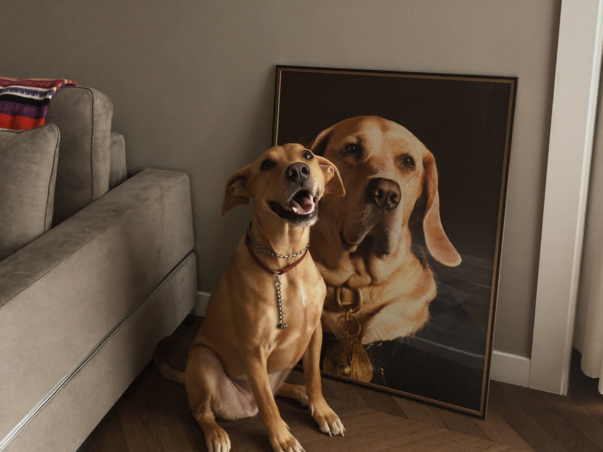
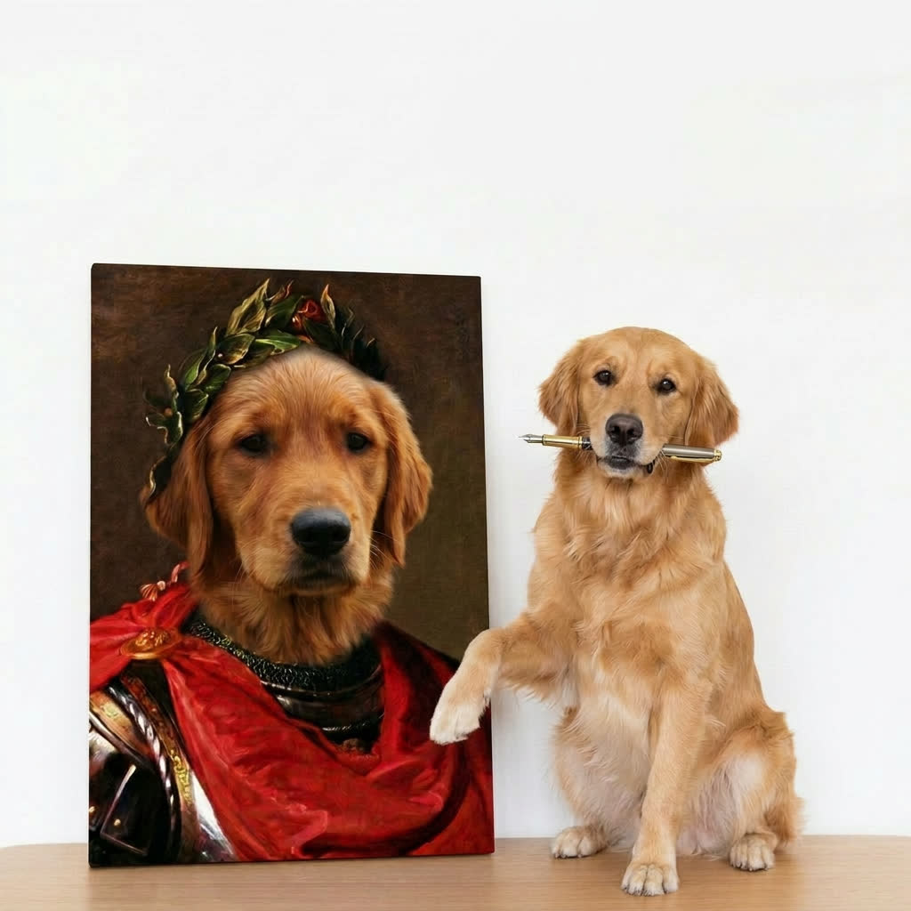
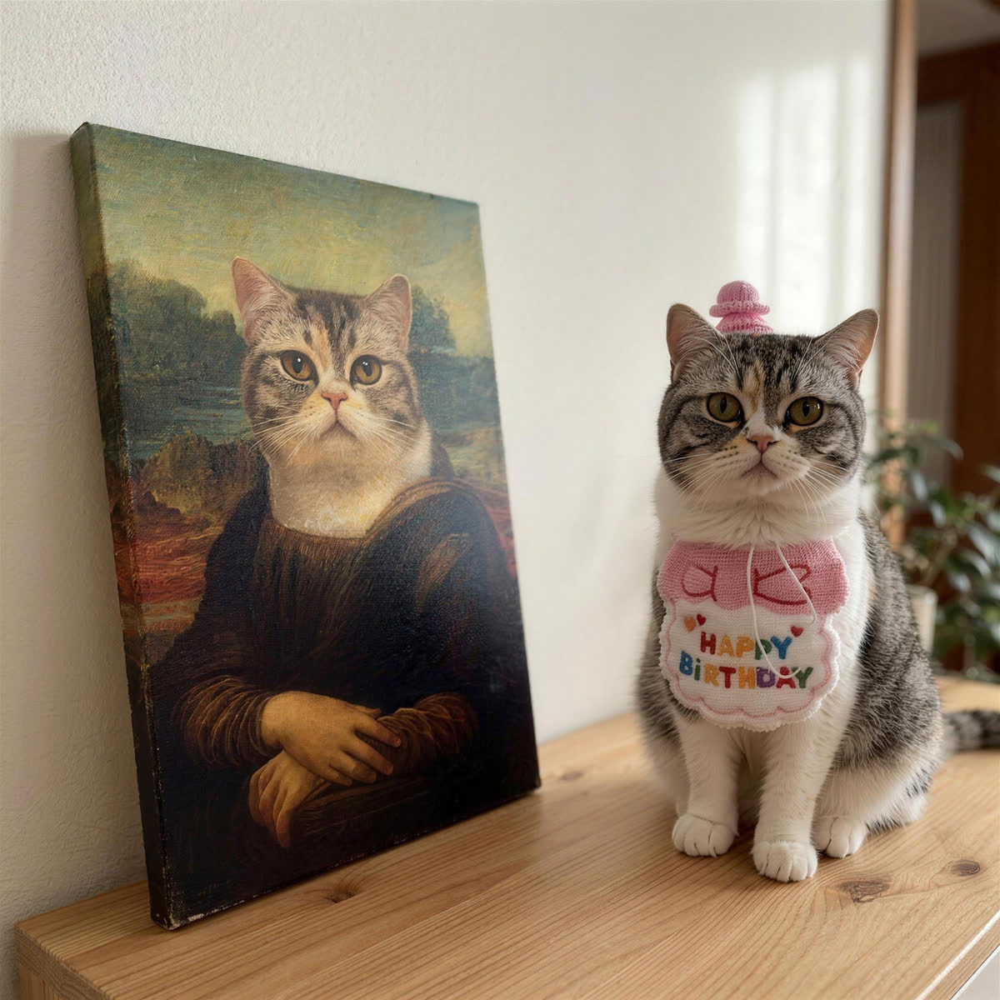
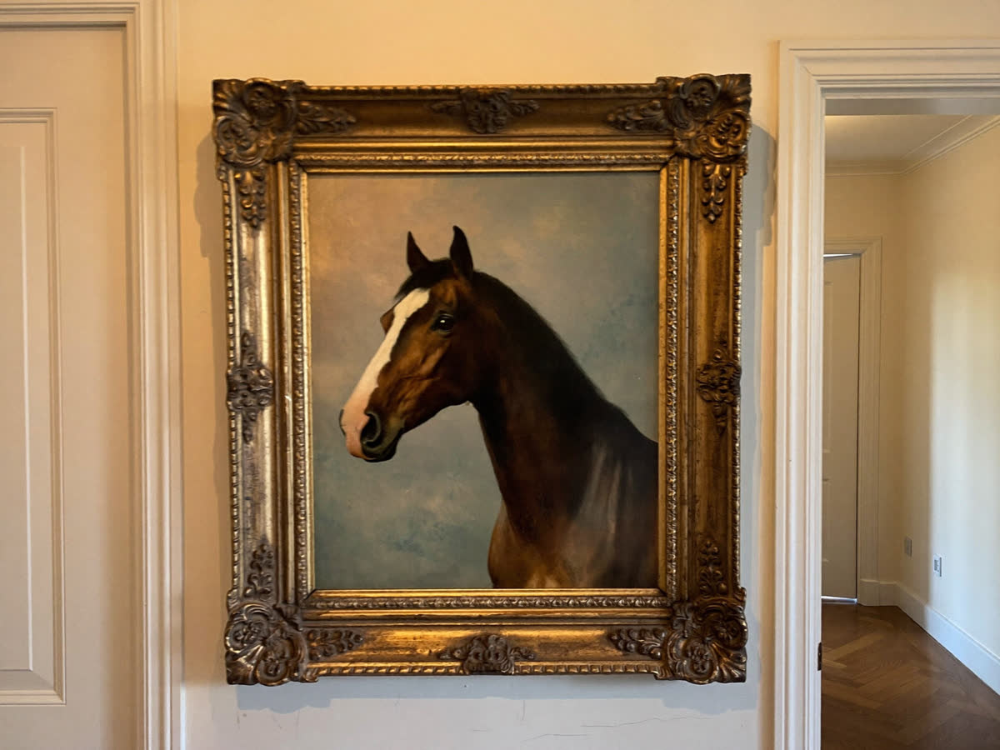
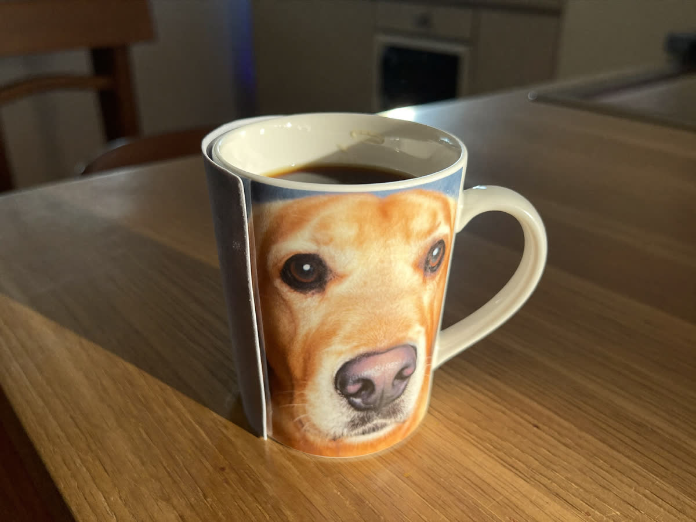
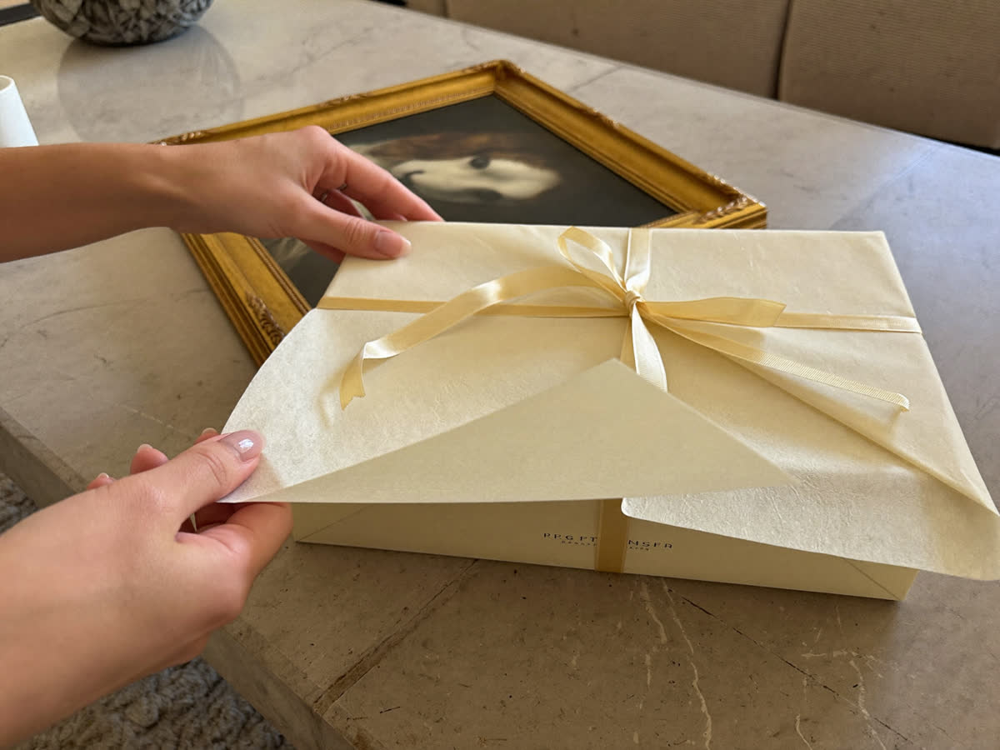
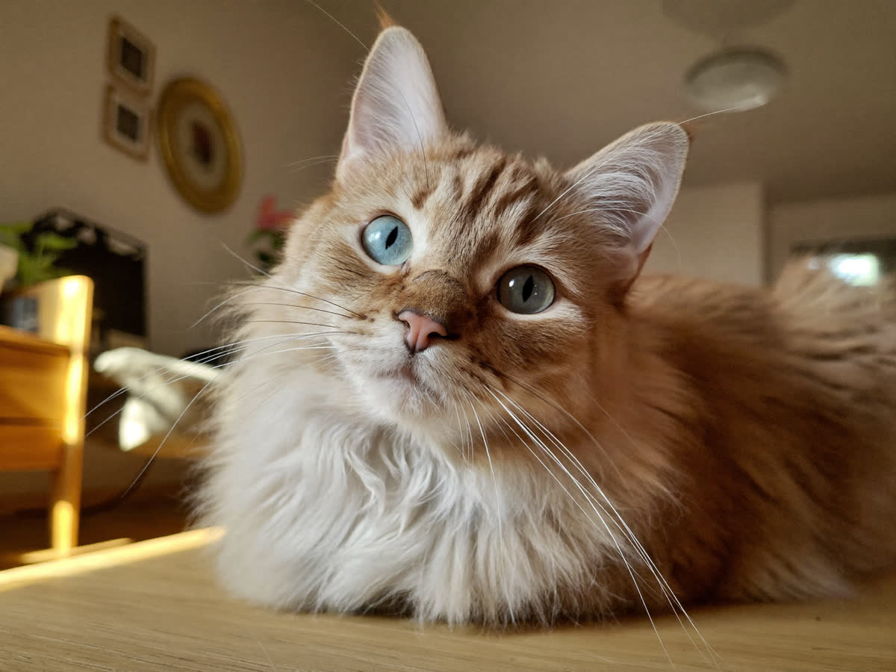

PoseyPets
Ein deutscher Onlineshop für individuelle Tierportraits. Der Kunde lädt ein Foto hoch, und sein Tier wird als historische Figur gemalt. Die Aufgabe: gefunden werden, ohne jeden Besucher einkaufen zu müssen.
Offenlegung: PoseyPets ist ein eigenes Projekt. Wir zeigen es, weil wir dort jeden Schritt selbst gegangen sind und offen darüber schreiben können, auch über das, was nicht funktioniert hat.
Ausgangssituation
Ein neuer Shop ohne Domainhistorie, in einem Umfeld, in dem bereits internationale Anbieter stehen. Zum Start war der Shop bei Google für keinen einzigen relevanten Begriff zu finden.
Die naheliegende Alternative wäre gewesen, jeden Besucher über bezahlte Anzeigen einzukaufen. Das funktioniert, solange Budget da ist, und endet an dem Tag, an dem es aufhört. Bei einem Produkt mit begrenztem Warenkorbwert frisst es außerdem die Marge. Also sollte die organische Suche die tragende Säule werden.


Keyword-Recherche
Der wichtigste Fund kam ganz am Anfang und hat die gesamte Struktur bestimmt: bei diesen Begriffen entscheidet die Schreibweise über den Erfolg.
„Haustier Portrait“ und „Haustierportrait“ sind für Google nicht dasselbe Wort. Der Unterschied im Suchvolumen liegt beim Zehnfachen.
Und es gibt keine Regel dafür. Bei einem Tier gewinnt die getrennte Schreibweise deutlich, beim nächsten die zusammengeschriebene. Das muss pro Begriff geprüft werden, bevor irgendetwas geschrieben wird, denn die Schreibweise steckt später in Titeln, Überschriften und URLs und lässt sich nicht beiläufig ändern.
Genauso wichtig war, was aussortiert wurde. Ein ganzer Begriffscluster sah nach viel Volumen aus, bestand aber fast vollständig aus Leuten, die selbst malen lernen wollen. Ein zweiter war komplett wertlos, weil die Suchenden etwas ganz anderes meinten. Beide wurden gestrichen, bevor Arbeit hineinfloss.

Seitenstruktur
Daraus wurden sechs eigene Landingpages gebaut, je eine pro Hauptbegriff, nach einer einzigen Regel: ein Suchbegriff, eine Seite. Keine zwei Seiten konkurrieren um denselben Begriff, weil sie sich sonst gegenseitig die Position wegnehmen.
Diese Seiten sind keine Textwüsten, sondern echte Produktübersichten. Wer über die Suche kommt, sieht sofort Produkte und nicht erst 800 Wörter Einleitung. Jede Produktseite bekam zusätzlich einen eigenen Textblock, der auf ihren eigenen Begriff zugeschnitten ist.
Inhalte
Zwei bewusst unterschiedliche Formate statt eines Blogs, weil sie zwei verschiedene Aufgaben haben:
- Ratgeber für die ausführlichen Fragen, die sich jemand vor dem Kauf stellt.
- Lexikon von A bis Z für die vielen kurzen Begriffssuchen, mit eigener Filterung.
Dazu eine feste Regel für die interne Verlinkung: etwa 60 Prozent der Links zeigen auf Seiten, die verkaufen, 40 Prozent auf weitere Inhalte.
Warum diese Regel
Ohne sie verlinkt ein Blog nach einiger Zeit fast nur noch sich selbst. Die Artikel ranken dann vielleicht, schieben aber keine Kraft mehr auf die Seiten, an denen tatsächlich Geld verdient wird.


Technik
Vollständige Metadaten über alle Produkte und Kategorien, eine FAQ mit passender Auszeichnung für die Suchergebnisse, Ladezeit und mobile Darstellung, und eine saubere interne Verlinkung bis in den Footer.
Eine Entscheidung dabei war, bestehende URLs nicht umzuziehen, obwohl eine andere Struktur auf dem Papier schöner gewesen wäre. Die Seiten rankten bereits.
Einen vorhandenen Rankingaufbau für eine kosmetische Verbesserung wegzuwerfen, ist einer der teuersten Fehler überhaupt. Wir sehen ihn ständig.
Stand heute
Der Shop ist live, verkauft und läuft geschäftlich gut. Die Sichtbarkeit baut sich weiter auf, die Landingpages ranken für ihre jeweiligen Begriffe, und es kommen laufend Inhalte dazu. SEO ist hier kein abgeschlossenes Projekt, sondern die Grundlage, auf der weitergearbeitet wird.

Was daraus für andere folgt
Die Reihenfolge entscheidet. Zuerst prüfen, welche Suchbegriffe überhaupt zu Umsatz führen, dann die Seiten dafür bauen, erst danach Inhalte produzieren. Wer umgekehrt anfängt, schreibt Texte für Suchanfragen, die nie zu einer Anfrage führen, und merkt es erst nach Monaten.
Und die Schreibweise prüfen. Eine falsch gewählte Variante kostet dauerhaft den Großteil des möglichen Volumens, weil sie in Titeln, URLs und Überschriften steckt. Diese halbe Stunde am Anfang ist die billigste Stunde im ganzen Projekt.
Wo steht Ihre Seite gerade?
Sie bekommen schriftlich, für welche Suchbegriffe Sie gefunden werden, wer vor Ihnen steht und woran es liegt.